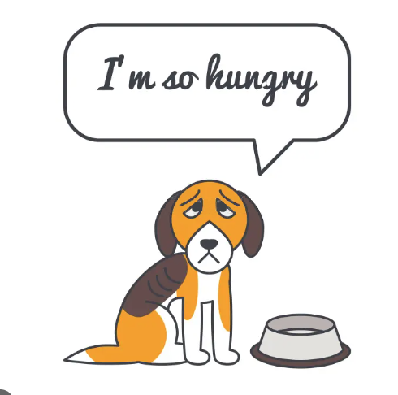
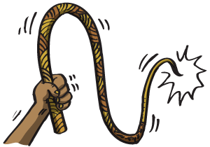

Cada especie es una obra maestra, una creación hecha con extremo cuidado y genio. (Edward O. Wilson)
Todos los seres vivos somos una creación perfecta.
Conoce algunas formas de maltrato animal

No Alimentarlos Bien
Es fundamental una buena alimentacion para su salud, vitalidad y bienestar. Debemos procurar que reciba todos los nutrientes necesarios para una vida sana. Una buena alimentación es indispensable para cuidar la salud de nuestros animales de compañía.

Estimularlos con Instrumentos que les Causan Dolor
El dolor produce complicaciones cardiovasculares, pulmonares y gastrointestinales además produce una respuesta neuroendocrina y metabólica e inicia efectos adversos que prolongan y complican la recuperación de heridas o enfermedades.